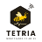

Início
Sobre
Calculadora
Contato
Login
CALCULADORA FINANCEIRA
Calcule os resultados financeiros das suas colmeias
🐝Dados da sua produção
Quantidade de Colmeias:
Custo de reposição de uma colmeia de Apis mellifera:
Quantos (kg) de mel é produzido por colmeia ao ano?
Valor do mel por kg:
Quantidade de colmeias perdidas ao ano:
*Por temperatura e umidade
Em que mês, em média, as colmeias são perdidas?
Selecione o mês
Janeiro
Fevereiro
Março
Abril
Maio
Junho
Julho
Agosto
Setembro
Outubro
Novembro
Dezembro
Calcular
Limpar